One-Dimensional Steady Conduction
§ 3-1 — Physical Modelفي حالة Steady Heat Conduction خلال Plane Wall — مثل جدار منزل في الشتاء — الحرارة تنتقل باستمرار من الداخل إلى الخارج بسبب وجود Temperature Difference بين السطحين.
Heat transfer in a certain direction is driven by the temperature gradient in that direction.
إذا لم يوجد تغير في درجة الحرارة في اتجاه معين ← لا يوجد significant heat transfer في هذا الاتجاه. أسطح الجدار الداخلية والخارجية تكون تقريبًا isothermal، أي أن درجة الحرارة عند أعلى/أسفل ويمين/يسار السطح تقريبًا متساوية. لذلك:
- لا يوجد significant heat transfer من top إلى bottom.
- لا يوجد significant heat transfer من left إلى right.
- يوجد significant heat transfer من inner surface → outer surface.
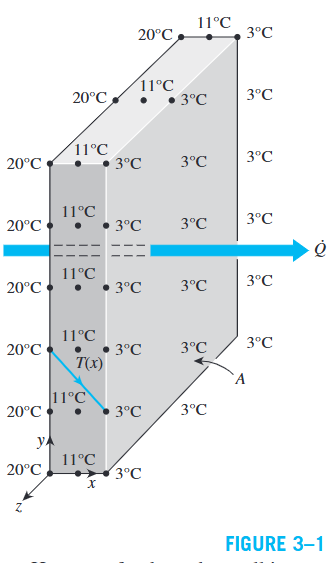
لأن سمك الجدار صغير مقارنةً بأبعاده الأخرى، يكون Temperature Gradient في اتجاه السمك كبيرًا. إذا ظلت درجات حرارة الهواء داخل وخارج المنزل ثابتة، يمكن تمثيل انتقال الحرارة على أنه:
- Steady: درجة الحرارة عند أي نقطة لا تتغير مع الزمن.
- One-dimensional: درجة الحرارة تعتمد على اتجاه واحد فقط.
بما أن heat transfer هو الـenergy interaction الوحيد ولا يوجد heat generation:
في Steady Operation: \(\dfrac{dE_{wall}}{dt} = 0\) إذًا: \(\dot{Q}_{in} = \dot{Q}_{out}\)
Fourier's Law for a Plane Wall
§ 3-1 — Heat Conduction EquationلـPlane Wall بسمك \(L\)، ومعامل توصيل حراري متوسط \(k\)، ومساحة \(A\)، ودرجات حرارة سطحية \(T_1\) و\(T_2\)، مع one-dimensional steady heat conduction:
حيث إن \(\dot{Q}_{cond,wall}\) و\(A\) ثابتان، فإن \(\dfrac{dT}{dx} = \text{constant}\)، وهذا يعني أن درجة الحرارة تتغير خطيًا مع \(x\):
Under steady conditions, the temperature distribution in a plane wall is a straight line.
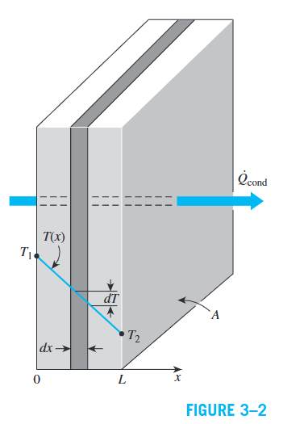
Derivation
نبدأ من Fourier's Law ونفصل المتغيرات ونكامل:
معدل Heat Conduction خلال Plane Wall:
- يتناسب طرديًا مع: thermal conductivity \(k\)، مساحة الجدار \(A\)، وفرق درجات الحرارة \((T_1 - T_2)\).
- يتناسب عكسيًا مع: سمك الجدار \(L\).
إذا كان \(\dot{Q}_{cond,wall}\) معلومًا، يمكن تحديد \(T(x)\) عند أي موضع \(x\) باستبدال \(T_2 \to T\) و\(L \to x\) في المعادلة 3-3.
Thermal Resistance Concept
§ 3-1 — Electrical Analogyيمكن إعادة ترتيب المعادلة 3-3 لتأخذ شكل Thermal Resistance:
Thermal resistance is the ratio of the driving potential \(\Delta T\) to the corresponding heat-transfer rate \(\dot{Q}\):
\[ R_{wall} = \frac{\Delta T}{\dot{Q}_{cond,wall}} \]وتعتمد Thermal Resistance للوسط على Geometry وThermal Properties.
Thermal–Electrical Analogy
هناك Analogy بين انتقال الحرارة وتدفق التيار الكهربائي:
| Heat Transfer | Electrical System |
|---|---|
| Heat-transfer rate \(\dot{Q}\) | Electric current \(I\) |
| Thermal resistance \(R\) | Electrical resistance \(R_e\) |
| Temperature difference \(\Delta T\) | Voltage difference \(\Delta V\) |
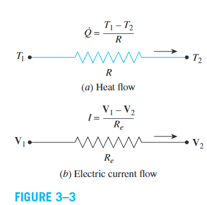
الفكرة الأساسية: يمكن التعامل مع Heat Transfer باستخدام Thermal Resistance Network بطريقة مشابهة للدوائر الكهربائية:
\[ \text{Heat-transfer rate} = \frac{\text{Temperature driving potential}}{\text{Thermal resistance}} \]Example 3–1: Heat Loss through a Wall
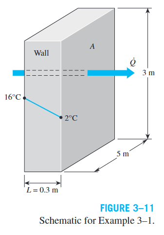
Given
Solution
Convection & Radiation Resistance
§ 3-1 — Surface Thermal ResistancesConvection Resistance
باستخدام Newton's Law of Cooling: \(\dot{Q}_{conv} = hA_s(T_s - T_\infty)\)، يمكن إعادة كتابتها:
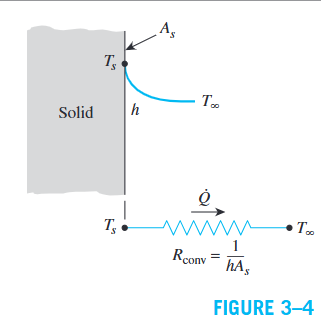
إذا \(h \to \infty\) فإن \(R_{conv} \to 0\) وبالتالي \(T_s \approx T_\infty\). هذا يعني أن السطح لا يقدم تقريبًا أي مقاومة أمام Convection. هذه الحالة يتم الاقتراب منها عمليًا عند أسطح Boiling وCondensation.
المعادلة ليست مقتصرة على plane surfaces؛ يمكن استخدامها لأسطح بأي شكل بشرط أن يكون \(h = \text{constant and uniform}\).
Radiation Resistance
عندما يكون الجدار محاطًا بغاز، قد تكون تأثيرات Radiation مهمة. لسطح بـemissivity \(\varepsilon\) ومساحة \(A_s\):
عند حساب \(h_{rad}\)، يجب أن تكون \(T_s\) و\(T_{surr}\) بوحدة Kelvin. كما أن \(h_{rad}\) يعتمد بشكل كبير على درجة الحرارة، بخلاف \(h_{conv}\).
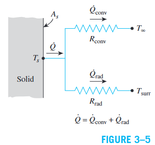
Combined Heat-Transfer Coefficient
الـConvection وRadiation Resistances تكونان parallel. عندما \(T_{surr} \approx T_\infty\):
Thermal Resistance Network
§ 3-1 — Plane Wall with Convection on Both SidesلـPlane Wall بسمك \(L\) ومساحة \(A\) ومعامل توصيل \(k\)، بين موائع عند \(T_{\infty1}\) و\(T_{\infty2}\) مع معاملات حمل \(h_1\) و\(h_2\)، حيث \(T_{\infty2} < T_{\infty1}\):
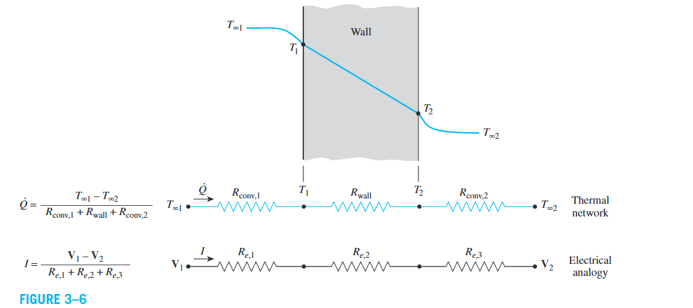
داخل الجدار تتغير درجة الحرارة linearly، بينما في الموائع تقترب درجة الحرارة asymptotically من \(T_{\infty1}\) و\(T_{\infty2}\). في steady conditions، نفس heat-transfer rate يمر خلال كل جزء:
Total Thermal Resistance
بجمع temperature differences ومقابلها resistances:
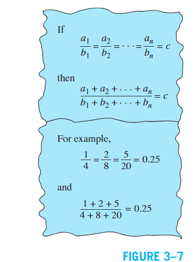
بما أن \(\dot{Q}\) ثابت في steady state:
\[ \Delta T = \dot{Q} \cdot R \qquad (^\circ C) \tag{3-17} \]Temperature drop across a layer is proportional to the thermal resistance of that layer. كلما زادت \(R\)، زاد الانخفاض في درجة الحرارة عبرها.
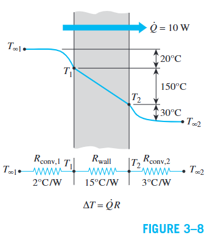
Overall Heat Transfer Coefficient \(U\)
Overall heat-transfer coefficient = inverse of total thermal resistance per unit area.
وحدته: \(W/m^2 \cdot K\). يُستخدم بشكل خاص في Heat Exchangers وWindows (يُعرف باسم U-factor).
Determining Surface Temperatures
لا نحتاج لمعرفة surface temperatures مسبقًا لحساب \(\dot{Q}\). بعد حسابها:
Example 3–2: Heat Loss through a Single-Pane Window
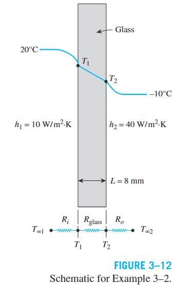
Given
Solution
💬 Discussion
رغم أن درجة حرارة الغرفة 20°C، فإن السطح الداخلي للزجاج عند −2.2°C تقريبًا! هذا قد يسبب fog formation أو حتى frost عند ارتفاع humidity داخل الغرفة.
Multilayer Plane Walls
§ 3-1 — Composite Wall Systemsفي التطبيقات العملية، قد يتكون الجدار من عدة طبقات من مواد مختلفة. كل طبقة تضيف conduction resistance جديدة in series.
في Steady State، \(\dot{Q}\) ثابت، لذلك نفس معدل انتقال الحرارة يمر خلال كل طبقة وكل مقاومة حمل حراري. لذلك تكون resistances in series، والـtotal resistance = المجموع الحسابي. لثلاث طبقات أو أكثر: أضف مقاومة توصيل واحدة لكل طبقة إضافية.
Finding Interface Temperatures
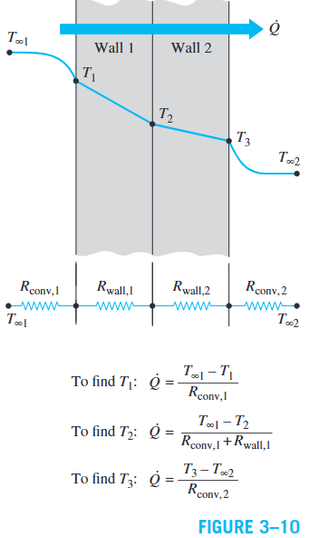
الـThermal Resistance Concept أداة قوية وسهلة، لكنها تعتمد على أن \(\dot{Q} = \text{constant}\). لذلك تُستخدم فقط للأنظمة ذات steady heat transfer وبدون internal heat generation.
Example 3–3: Heat Loss through Double-Pane Windows
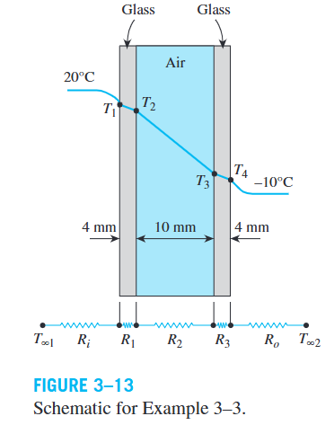
Given
Solution
💬 Discussion
مقارنةً بـsingle-pane window: \(T_1\) ارتفعت من −2.2°C إلى 14.2°C. الـstagnant air layer تمتلك مقاومة حرارية كبيرة (\(R_{air}\) هي المهيمنة). النوافذ المزدوجة تقلل fogging، وفقدان الحرارة شتاءً، واكتساب الحرارة صيفًا، وبالتالي تقلل تكاليف التكييف.
Thermal Contact Resistance
§ 3-2 — Imperfect Contact Between Solidsفي تحليل multilayer solids، افترضنا وجود perfect contact بين الطبقات. لكن في الواقع، حتى الأسطح التي تبدو ملساء تكون microscopically rough وتحتوي على peaks وvalleys.
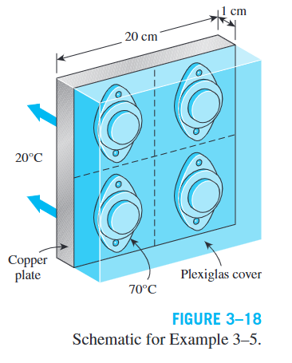
عند ضغط سطحين معًا:
- الـpeaks تعمل كـsolid-to-solid contact.
- الـvalleys تحتوي غالبًا على air gaps.
- لأن thermal conductivity of air منخفضة، تعمل هذه الفجوات كـinsulation.
Thermal contact resistance \(R_c\) is the thermal resistance at the interface between two solid surfaces due to imperfect contact, defined per unit interface area.
قيمتها تُحدد experimentally، مع وجود scatter ملحوظ في البيانات.
\(R_c = 0.000005\) إلى \(0.0005 \; m^2 \cdot K/W\) ←→ \(h_c = 2{,}000\) إلى \(200{,}000 \; W/m^2 \cdot K\)
العوامل المؤثرة: surface roughness، material properties، interface temperature، interface pressure، ونوع fluid المحصور.
When is \(R_c\) Significant?
نقارنها مع thermal resistance للطبقة:
- 1 cm insulation: \(R = L/k = 0.01/0.04 = 0.25 \; m^2 \cdot K/W\) ← مقاومة الطبقة كبيرة جدًا ← \(R_c\) يمكن إهمالها.
- 1 cm copper: \(R = L/k = 0.01/386 = 0.000026 \; m^2 \cdot K/W\) ← مقاومة الطبقة صغيرة ← \(R_c\) قد تكون dominant.
Reducing \(R_c\)
- Thermal Grease (مثل silicone oil) بين السطحين — خاصة عند تركيب electronic components على heat sinks.
- استبدال الهواء بغاز أفضل توصيلًا مثل helium أو hydrogen.
- Soft Metallic Foil (tin, silver, copper, nickel, aluminum) — يقلل \(R_c\) بعامل يصل إلى 7.
| Table 3–1: Thermal Contact Conductance (Aluminum, 10 μm roughness, 1 atm) | |
|---|---|
| Fluid at Interface | \(h_c\) (W/m²·K) |
| Air | 3,640 |
| Helium | 9,520 |
| Hydrogen | 13,900 |
| Silicone oil | 19,000 |
| Glycerin | 37,700 |
| Table 3–2: Thermal Contact Conductance of Metal Surfaces | |||
|---|---|---|---|
| Material Pair / Condition | Roughness (μm) | Pressure (MPa) | \(h_c\) (W/m²·K) |
| 416 SS, ground | 2.54 | 0.17–2.5 | 3,800 |
| 304 SS, ground | 1.14 | 4–7 | 1,900 |
| Aluminum, ground | 2.54 | 1.2–2.5 | 11,400 |
| Copper, ground | 1.27 | 1.2–20 | 143,000 |
| Copper, milled | 3.81 | 1–5 | 55,500 |
| Steel–Aluminum, ground | 1.4–2.0 | 15–35 | 59,000 |
| Aluminum–Copper, ground | 1.17–1.4 | 15 | 56,000 |
\(h_c\) يكون أعلى (و\(R_c\) أقل) عند: soft metals + smooth surfaces + high pressure.
Example 3–4: Equivalent Thickness for Contact Resistance
Given
Solution
💬 Discussion
الـinterface بين اللوحين لها نفس thermal resistance تقريبًا لطبقة aluminum سمكها 2.15 cm — أكبر من مجموع مقاومتي اللوحين نفسيهما.
Example 3–5: Contact Resistance of Transistors
Given
Solution
💬 Discussion
الـtemperature jump صغير جدًا. حتى لو تم إزالة contact resistance تمامًا، لن تنخفض درجة حرارة التشغيل إلا بأقل من 0.4°C. الـconvection resistance هي المهيمنة.
Generalized Thermal Resistance Networks
§ 3-3 — Parallel & Series-Parallel Arrangementsيمكن استخدام Thermal Resistance Concept أيضًا في steady heat transfer الذي يحتوي على parallel layers وseries-parallel arrangements.
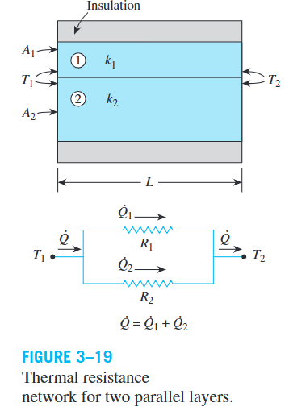
Parallel Thermal Resistances
Combined Series-Parallel Arrangement
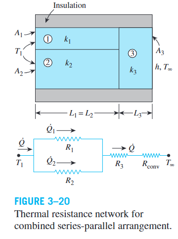
هذا الحل approximate لأن أسطح الطبقة الثالثة قد لا تكون isothermal، وقد يحدث heat transfer بين الطبقتين الأولى والثانية.
Two Approximation Approaches
أي plane wall normal لمحور \(x\) تكون isothermal: \(T = T(x)\).
أي plane parallel لمحور \(x\) تكون adiabatic.
الافتراضان يؤديان إلى قيم مختلفة قليلًا لـ\(R_{total}\) و\(\dot{Q}\). القيمة الفعلية تقع بينهما. عندما يكون heat transfer predominant في اتجاه واحد، كلاهما يعطي نتائج مقبولة.
Example 3–6: Heat Loss through a Composite Wall
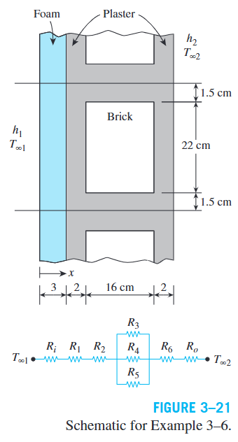
Given
Solution
The construction repeats every 25 cm vertically. Taking a representative section (\(A = 0.25\;m^2\)):
💬 Discussion
النتيجة approximate. الأسلوب البديل (adiabatic planes) يعطي \(R_{total} = 6.97\;°C/W\) — قريبة جدًا. كلا الأسلوبين يعطي نتائج مقبولة لهذه الهندسة.
Heat Conduction in Cylinders & Spheres
§ 3-4 — Multilayered Cylindrical & Spherical Systemsعند انتقال الحرارة خلال multilayered cylindrical أو spherical systems في حالة steady-state، يمكن التعامل مع كل طبقة كـthermal resistance مستقلة. المثال الأساسي هو hot-water pipe حيث يحدث فقدان حرارة باستمرار.
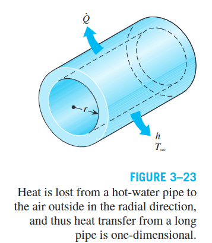
Multilayered Composite Cylinder
لـcylinder مكوّن من ثلاث طبقات أسطوانية، مع convection على السطح الداخلي والخارجي:
حيث \(A_1 = 2\pi r_1 L\) و\(A_4 = 2\pi r_4 L\). ومعدل انتقال الحرارة:
| Resistance | Physical Meaning |
|---|---|
| \(R_{conv,1}\) | مقاومة Convection عند السطح الداخلي |
| \(R_{cyl,1}\) | مقاومة Conduction خلال Layer 1 |
| \(R_{cyl,2}\) | مقاومة Conduction خلال Layer 2 |
| \(R_{cyl,3}\) | مقاومة Conduction خلال Layer 3 |
| \(R_{conv,2}\) | مقاومة Convection عند السطح الخارجي |
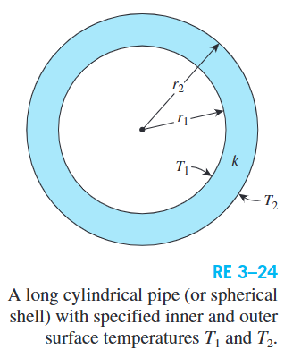
Multilayered Spherical Shell
نفس الأسلوب يُستخدم مع spherical shells، مع اختلاف صيغة conduction resistance:
Intermediate Temperatures
يمكن إيجاد temperatures عند أي interface باستخدام:
\[ \Delta T_i = \dot{Q} \cdot R_i \]فمثلًا: \(T_2 = T_{\infty1} - \dot{Q}(R_{conv,1} + R_{cyl,1})\)
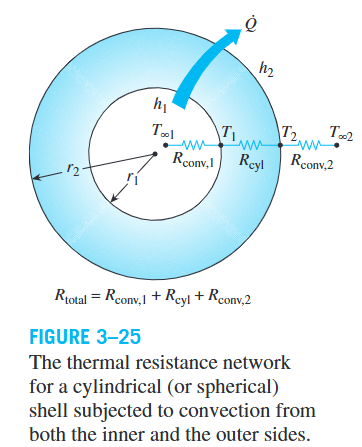
Example 3–7: Spherical Tank (Iced Water)
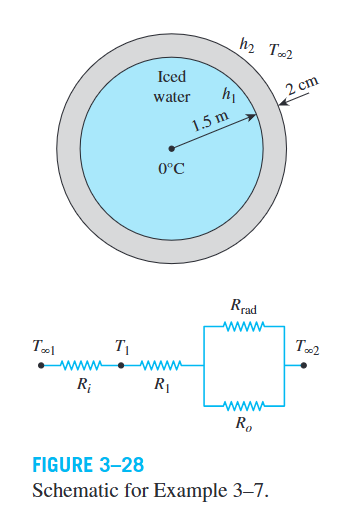
Given
Solution
Example 3–8: Insulated Cast-Iron Pipe
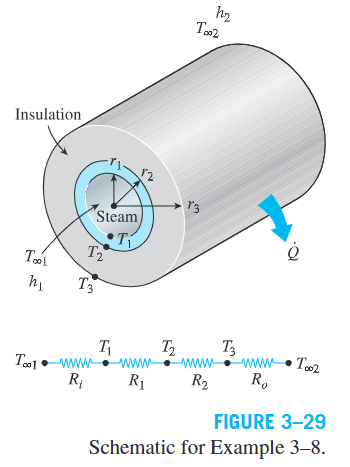
Given
Solution
💬 Discussion
\(R_{pipe} \ll R_{ins}\): الأنبوب تقريبًا isothermal. معظم الـtemperature drop يحدث عبر insulation التي تتحكم أساسًا في total thermal resistance وبالتالي heat loss.
Critical Radius of Insulation
§ 3-5 — Opposing Effects of Insulationفي Plane Wall، إضافة insulation دائمًا تقلل heat transfer لأن المساحة لا تتغير. لكن في cylinders وspheres يحدث تأثيران متعاكسان:
- Effect 1 — Conduction Resistance ↑: زيادة insulation thickness تزيد \(R_{conduction}\) ← تميل لتقليل heat transfer.
- Effect 2 — Convection Area ↑: زيادة outer radius تزيد surface area ← تقل \(R_{convection} = 1/(hA)\) ← تميل لزيادة heat transfer.
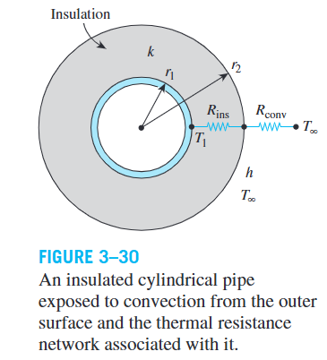
لأنبوب أسطواني، معدل انتقال الحرارة:
بوضع \(\dfrac{d\dot{Q}}{dr_2} = 0\) نحصل على Critical Radius:
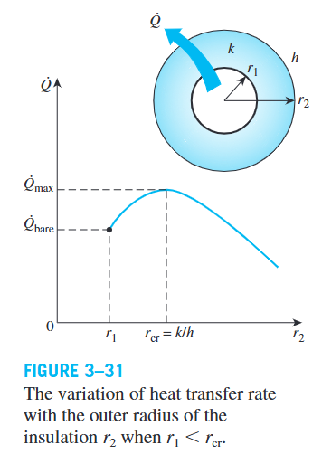
- \(r_2 < r_{cr}\): زيادة insulation تزيد \(\dot{Q}\).
- \(r_2 = r_{cr}\): \(\dot{Q}\) يصل إلى maximum.
- \(r_2 > r_{cr}\): زيادة insulation تقلل \(\dot{Q}\).
Practical Significance
لأقل قيم عملية لـ\(h\) في natural convection of gases (حوالي \(5\;W/m^2\cdot K\)) ومعامل توصيل insulation نموذجي (\(k \approx 0.05\;W/m\cdot K\)):
\[ r_{cr,max} = \frac{k}{h} = \frac{0.05}{5} \approx 0.01\;m = 1\;cm \]- Hot-water/steam pipes: يمكن إضافة insulation بدون قلق لأن أنصاف أقطار الأنابيب أكبر عادةً من \(r_{cr}\).
- Electric wires: قد يكون نصف القطر أقل من \(r_{cr}\)، فإضافة plastic insulation قد تزيد heat transfer وتخفض درجة الحرارة — مفيد للسلامة!
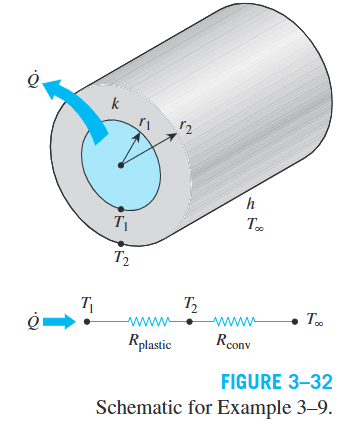
Example 3–9: Electric Wire with Plastic Insulation
Given
Solution
💬 Discussion
بما أن \(r_2 < r_{cr}\)، فإن إضافة insulation تزيد heat transfer وتخفض درجة الحرارة — مفيد لسلامة الأسلاك الكهربائية! عند \(r_2 = r_{cr}\) تصل درجة الحرارة إلى أدنى مستوى (83°C تقريبًا).
Fin Effectiveness & Efficiency
§ 3-6 — Extended SurfacesFin effectiveness is the ratio of heat transfer from the fin to the heat transfer that would occur from the same base area without the fin:
\[ \varepsilon_{fin} = \frac{\dot{Q}_{fin}}{\dot{Q}_{no\;fin}} = \frac{\dot{Q}_{fin}}{hA_b(T_b - T_\infty)} \]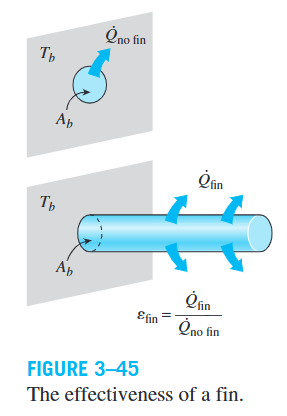
Physical Meaning
- \(\varepsilon_{fin} = 1\): الـfin لا تؤثر على heat transfer.
- \(\varepsilon_{fin} < 1\): الـfin تعمل كـinsulation وتقلل heat transfer — يحدث مع مواد ذات \(k\) منخفض.
- \(\varepsilon_{fin} > 1\): الـfin تعزز heat transfer — وهذا هو المطلوب.
Relationship: Efficiency ↔ Effectiveness
Effectiveness of a Sufficiently Long Fin
من معادلة heat transfer لـsufficiently long fin ذات uniform cross section:
Design Conclusions for Fins
- High \(k\): استخدام معادن مثل Copper أو Aluminum (الأكثر شيوعًا لانخفاض تكلفته ووزنه ومقاومته للتآكل).
- High \(p/A_c\): استخدام thin plate fins أو slender pin fins.
- Low \(h\): الـfins أكثر فاعلية مع gas (بدلًا من liquid) وnatural convection (بدلًا من forced convection). لذلك في car radiators توضع الـfins على جانب الغاز.
Heat Transfer from a Finned Surface
Overall Fin Effectiveness
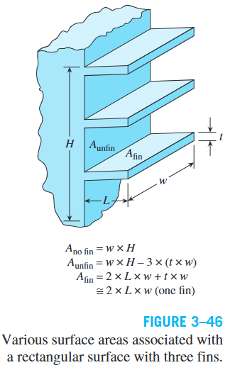
Example 3–12: Fins of Variable Cross Section (Parabolic Pin Fin)
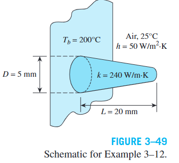
Given
Solution
Wait — the correct form: \(mL = L\sqrt{\dfrac{4h}{kD}} = 0.020\sqrt{\dfrac{200}{1.2}} = 0.020 \times 12.91 = 0.2582\)
💬 Discussion
الـpin fin يحقق تقريبًا 10-fold increase في heat transfer مقارنةً بالـbase area وحدها. باستخدام EES بدون interpolation: \(\eta_{fin} = 0.9855\) (أعلى بحوالي 2%).
Fin Design & Heat Sinks
§ 3-6 — Proper Length, Heat Sinks, BioheatProper Length of a Fin
درجة الحرارة على طول الـfin تنخفض exponentially وتقترب من \(T_\infty\). بعد مسافة معينة، الجزء الإضافي لا يساهم بشكل مؤثر في heat transfer.
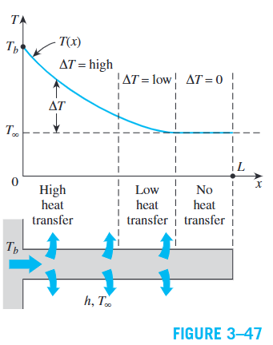
| \(mL\) | \(\tanh(mL)\) | % of Maximum |
|---|---|---|
| 0.1 | 0.100 | 10.0% |
| 0.5 | 0.462 | 46.2% |
| 1.0 | 0.762 | 76.2% |
| 1.5 | 0.905 | 90.5% |
| 2.0 | 0.964 | 96.4% |
| 2.5 | 0.987 | 98.7% |
| 3.0 | 0.995 | 99.5% |
| 5.0 | 1.000 | 100% |
- \(mL = 5\): الـfin عمليًا مكافئة لـinfinitely long fin ← \(L = 5/m\).
- \(mL = 2.5\): 98.7% من maximum heat transfer ← تقليل الطول للنصف مع خسارة 1% فقط!
- \(mL = 1\): 76.2% من maximum ← اختيار عملي جيد يحقق compromise بين الأداء والتكلفة والوزن.
الـfin الطويلة جدًا تؤدي إلى: material waste، وزن زائد، تكلفة مرتفعة، وقد تعيق حركة المائع (suppress fluid motion) مما يقلل \(h\).
One-Dimensional Validity
الخطأ في التحليل أحادي البعد يكون أقل من 1% عندما:
حيث \(d\) هي characteristic thickness (سمك الـrectangular fin أو قطر الـcylindrical fin).
Heat Sinks
هي finned surfaces مصممة خصيصًا لتبريد electronic equipment. أداؤها يُقاس بـthermal resistance:
كلما كانت \(R\) أصغر ← أداء أفضل. Fin parameter لمقطع عرضي ثابت:
\[ m = \sqrt{\frac{hp}{kA_c}} \]وكفاءة fin مع adiabatic tip:
\[ \eta_{fin} = \frac{\tanh(mL)}{mL} \]Bioheat Transfer
هو دراسة انتقال الحرارة داخل human body أو بينه وبين البيئة الخارجية. يشمل عدة آليات في الوقت نفسه: Conduction، Convection، Radiation، Evaporation، Phase Change، Metabolic Heat Generation (الحرارة الناتجة من هضم الطعام والعمل والتمارين)، وPerfusion (تبادل الطاقة الحرارية بين الدم المتدفق والأنسجة المحيطة).
قدم Harry Pennes (1948) نموذجًا بسيطًا لكنه دقيق نسبيًا، أظهر وجود فرق حرارة حوالي 3–4°C بين الجلد والأنسجة الداخلية.
Example 3–10: Maximum Power Dissipation of a Transistor
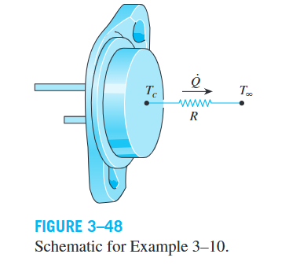
Given
Solution
💬 Discussion
يجب ألا يعمل الـtransistor عند power level أعلى من 3 W — أقل بكثير من التصنيف الأقصى (10 W). يمكن تشغيله عند طاقة أعلى بإضافة heat sink لتقليل thermal resistance أو استخدام fan لزيادة \(h\).
Example 3–11: Selecting a Heat Sink for a Transistor
Given
Solution
HS 5030 has \(R = 0.9\;°C/W\) in vertical position ✓
Select HS 5030 (R = 0.9°C/W, vertical position)
Example 3–13: Preventing Circuit Board Overheating
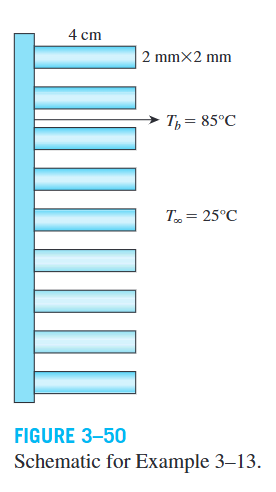
Given
Solution
Base area covered per fin: \((0.002)^2 = 4 \times 10^{-6}\;m^2\)
With \(n\) fins: \(\dot{Q}_{total} = 36 + 0.3481\,n\)
💬 Discussion
لتحقيق overall fin effectiveness = 3 والحفاظ على سطح الـcircuit board عند \(T_b \leq 85°C\)، نحتاج إلى الأقل 207 fin. يمكن تقليل العدد باستخدام مادة مختلفة أو هندسة مختلفة للـfins.
Heat Transfer through Walls & Roofs
§ 3-7 — Building Envelope Heat Transferتحت ظروف Steady Conditions، معدل انتقال الحرارة خلال أي جزء من building wall or roof:
حيث \(T_i\) و\(T_o\) درجتا حرارة الهواء الداخلي والخارجي، \(U\) هو Overall Heat Transfer Coefficient، و\(R = 1/U\) هو R-value.
Surface Convection & Radiation Coefficients
يتم دمج تأثيري Convection وRadiation عند كل سطح في معامل واحد: combined convection and radiation heat transfer coefficient (أو surface conductance).
- Indoor: \(h_i = 8.29\;W/m^2\cdot K\) (ثابت تقريبًا طوال السنة)
- Outdoor (Winter): \(h_o = 34.0\;W/m^2\cdot K\) عند سرعة رياح \(24\;km/h\)
- Outdoor (Summer): \(h_o = 22.7\;W/m^2\cdot K\) عند سرعة رياح \(12\;km/h\)
Trapped Air Spaces
قد تحتوي مكونات البناء على trapped air spaces. الـthermal resistance لهذه الطبقات تعتمد على: السمك، فرق درجات الحرارة، متوسط درجة الحرارة، emissivity لكل سطح، الاتجاه، واتجاه heat flow.
عندما يكون أحد الأسطح reflective (مثل aluminum foil)، فإن \(\varepsilon_{effective}\) تنخفض بشدة. النسبة: \(0.82/0.03 \approx 27\)، أي أن radiation heat transfer مع أسطح عادية أكبر بحوالي 27 مرة من حالة reflective surfaces.
Overall R-value
لجدار أو سقف يتكون من طبقات uniform thickness مرتبة in series:
\[ R_{overall} = \sum R_i \]عند وجود مكونات مثل wood studs أو metal connectors:
- Parallel paths method: عادةً overpredicts الـ\(R\) — مناسبة لـwood-frame walls.
- Isothermal planes method: عادةً underpredicts الـ\(R\) — مناسبة لـmasonry/metal-frame walls.
Roof–Attic–Ceiling Systems
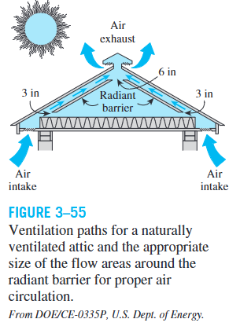
Vented Attic: \(T_{attic} \approx T_{outdoor}\)، فيكون heat transfer محكومًا أساسًا بـ\(R\)-value للـceiling. الـroof يعمل كـradiation shield.
يمكن تقليل radiation heat transfer بين ceiling وroof بمادة reflective مثل aluminum foil. تقلل summer ceiling heat gain بنسبة 16%–42%، وتقلل air-conditioning costs بحوالي 2%–10%.
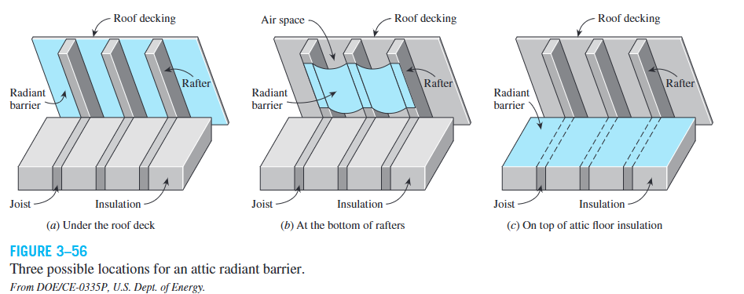
Unvented Attic:
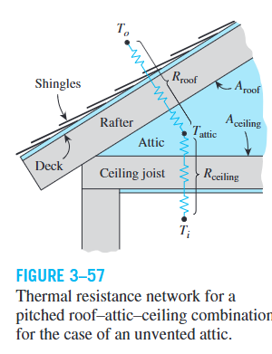
لـflat roofs: \(A_{ceiling}/A_{roof} = 1\). لـ45° pitched roof: \(A_{ceiling}/A_{roof} = 1/\sqrt{2} = 0.707\).
Key Relations Summary
Chapter 3 — Quick Reference| Concept | Key Relation | Meaning |
|---|---|---|
| Fourier's Law | \(\dot{Q} = -kA\dfrac{dT}{dx}\) | Heat conduction rate |
| Plane Wall | \(\dot{Q} = kA\dfrac{T_1 - T_2}{L}\) | Steady 1-D conduction |
| Conduction Resistance | \(R_{wall} = \dfrac{L}{kA}\) | Plane wall resistance |
| Convection Resistance | \(R_{conv} = \dfrac{1}{hA_s}\) | Surface convection resistance |
| Radiation Resistance | \(R_{rad} = \dfrac{1}{h_{rad}A_s}\) | Surface radiation resistance |
| Radiation Coefficient | \(h_{rad} = \varepsilon\sigma(T_s^2 + T_{surr}^2)(T_s + T_{surr})\) | Temperatures in K! |
| Combined Coefficient | \(h_{combined} = h_{conv} + h_{rad}\) | When \(T_{surr} \approx T_\infty\) |
| Thermal Resistance Method | \(\dot{Q} = \dfrac{\Delta T}{R}\) | Core concept |
| Series Resistances | \(R_{total} = \sum R_i\) | Same \(\dot{Q}\) through each |
| Parallel Resistances | \(\dfrac{1}{R_{total}} = \sum \dfrac{1}{R_i}\) | Same \(\Delta T\) across each |
| Temperature Drop | \(\Delta T = \dot{Q} \cdot R\) | Drop ∝ resistance |
| Cylinder Resistance | \(R_{cyl} = \dfrac{\ln(r_2/r_1)}{2\pi Lk}\) | Cylindrical conduction |
| Sphere Resistance | \(R_{sph} = \dfrac{r_2 - r_1}{4\pi k\,r_1 r_2}\) | Spherical conduction |
| Critical Radius (Cylinder) | \(r_{cr} = k/h\) | \(\dot{Q}\) max at this radius |
| Critical Radius (Sphere) | \(r_{cr} = 2k/h\) | \(\dot{Q}\) max at this radius |
| Fin Effectiveness | \(\varepsilon_{fin} = \dfrac{\dot{Q}_{fin}}{hA_b(T_b - T_\infty)}\) | Benefit of adding fin |
| Long-Fin Effectiveness | \(\varepsilon = \sqrt{kp/(hA_c)}\) | Infinite fin |
| Fin Heat Transfer Ratio | \(\dot{Q}_{fin}/\dot{Q}_{long} = \tanh(mL)\) | Finite vs. infinite |
| Fin Efficiency | \(\eta_{fin} = \tanh(mL)/(mL)\) | Adiabatic tip |
| 1-D Validity | \(hd/k < 0.2\) | Error < 1% |
Temperature Difference → Thermal Resistance Network → \(\dot{Q}\) → Temperature Drops
في multilayer systems: \(R_{total} = R_1 + R_2 + R_3 + \cdots\)، ثم \(\dot{Q} = \Delta T / R_{total}\)، ثم لأي طبقة: \(\Delta T_i = \dot{Q} \cdot R_i\).
في insulation على cylinders/spheres: لا يكفي القول "insulation تزيد resistance" — يجب مراعاة زيادة convection area أيضًا. لذلك يوجد Critical Radius.